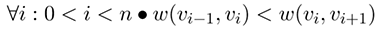

Lösung Aufgabe 4
Alexander Holland,
Henning Kahl,
Torben-Dennis Mader,
Jan Dieckhoff,
Konstantin Böhm,
Jonas Johannsen,
Christopher Wolter,
Gerhard Wagner,
Micheal Bernhardt,
Ralf Prediger,
Torben Fischer
Aufgabe 1 (Summenpaare)
Gegeben sei eine Sequenz S von ganzen Zahlen und eine ganze Zahl K. Zu berechnen ist die
Anzahl der Paare von Elementen (P;Q) aus S für die gilt:
P + Q = K
Beispiel: Bei der Eingabe sumPairs([1,5,3,7,2,2],4) existieren 4 Paare => (1,3),(3,1),(2,2),(2,2)
Implementierung
Testergebnisse
Ergebnis: Die Laufzeit ist in O(|S|log(|S|)). Angezeigt wird nur unsere Berechnung, die in O(|S|) erfolgt. Da wir das Array sortieren müssen und dies mittels
MergeSort in O(|S|log(|S|)) erfolgt, folgt daraus die Laufzeit von O(|S|log(|S|)).
Die Laufzeit ist Abhängig von der Größe des Arrays.
Da wir nur mit dem einen Array arbeiten, ist der Platzaufwand auch nur in O(|S|).
Experimente: Zeitaufwand bei der Berechnung der Summenpaare.
Übung Aufgabe 4.2 (Mittelpunkte)
Gegeben sei eine Sequenz S von ganzen Zahlen. Zu berechnen ist ein Index i für den gilt,
dass die Summe der Elemente links gleich der Summe der Elemente rechts von i ist: $\sum\nolimits_{0 \leq j < i}$ S[j] = $\sum\nolimits_{i < k < |S|}$ S[k]
Der Rückgabewert -1 zeigt an, dass es keinen solchen Index gibt.
Die Implementierung soll in O(|S|) laufen und höchstens O(|S|) zusätzlichen Speicherbedarf haben.
Implementierung
Testergebnisse
Die Laufzeit ist in O(|S|) und abhängig von der Größe des Arrays. Der Platzbetrag ist in O(1), da wir nur mit zwei Variablen arbeiten müssen.
Experimente: Zeitaufwand bei der Berechnung der Mittelpunkte.
Übung Aufgabe 4.3 (Längste Pfade ohne Richtungswechsel)
Gegeben sei ein binärer Baum T = (V, E) und die Funktionen r, l : V $\rightarrow$ V $\cup$ {nil},
die zu einem Knoten das jeweils rechte oder linke Kind bestimmen (nil bedeutet, dass der Knoten kein rechtes bzw. linkes Kind hat).
Zu berechnen ist die maximale Distanz zwischen den Knoten $v_{0}$, $v_{n}$ für die gilt,
dass sie auf einem Pfad von der Wurzel des Baums zu einem Blatt liegen und zusätzlich gilt
$\forall i : 0 \leq i < n \circ l(v_{i}) in (v_{0},...,v_{n})$ oder $\forall i : 0 \leq i < n \circ r(v_{i}) in (v_{0},...,v_{n})$
Die Implementierung soll in O(V) laufen und höchstens O(V) zusätzlichen Speicherbedarf haben.
Implementierung
Testergebnisse
Ergebnis: Die Laufzeit beträgt O(V) und es wird ein zusätzlicher Speicher von O(V) benötigt.
Experimente: Zeitaufwand zur findung des Längsten Pfades ohne Richtungswechsel
Experimente: Platzaufwand zur findung des Längsten Pfades ohne Richtungswechsel
Aufgabe 4.4 (Längste Pfade mit aufsteigendem Kantengewicht)
- Zu berechnen ist die Länge n des längsten Pfades (v0,...,vn) eines gerichteten Graphen G = (V,E) mit Gewichtsfunktion w : E -> R für den gilt, dass die Kantengewichte streng monoton zunehmen:
- Der Graph erlaubt Kanten der Form (v,v).
- Die Implementierung soll in O(V + E log(E)) laufen und höchstens O(V + E) zusätzlichen Speicherbedarf haben.
- Da keine Einschränkung darüber getroffen wurde, legen wir fest, dass das die Liste von Kanten per se nach aufsteigendem Kantengewicht sortiert ist.
Implementierung
Testergebnisse
Ergebnis: Die Laufzeit beträgt O(E) und hat einen Speicherbedarf von O(V+E).
"BeispielGraph" == graf_Henning

Experimente